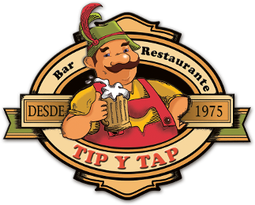

Tip y Tap
Tradición Alemana
Churrascos
Lomitos
Completos
Menú
churrascos
El churrasco es una trozo de carne a la plancha o «asado a la parrilla» en Argentina y Uruguay ("el Río de la Plata"). Cuando se hace a la parrilla es llamado "parrillada" o «barbacoa» en otros países hispanohablantes. La palabra churrasco es de origen español y deriva del verbo churrar, de origen onomatopéyico. Ya se encontraba presente en el castellano hacia 1495 (Wikipedia).
lomitos
El lomito, sándwich de lomo o simplemente lomo es un sándwich típico de la gastronomía argentina. Su forma habitual de consumo consiste en un filete de lomo de ternera, queso, jamón, huevo frito, tomate, lechuga y aderezos varios como mostaza, o mayonesa entre dos panes de lomo y de forma rectangular; muchas veces el pan se tuesta para evitar que la humedad de los ingredientes lo moje (Wikipedia).
completos
El completo es un bocadillo tradicional de Chile que consiste en un pan de hot dog, «pan de completo» o «pan copihue» abierto a lo largo,3 con una vienesa en el medio sobre la cual se colocan diversos ingredientes. Es una de las especialidades de comida rápida más comunes y conocidas en Chile. Se diferencia del tradicional hot dog estadounidense por llevar una mayor cantidad de ingredientes y aderezos y, además, por tener un mayor tamaño (Wikipedia).